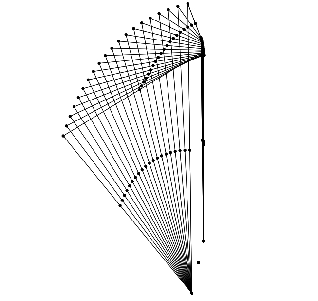

linkR

A 3D 4-bar linkage created using linkR.
The linkR package for R provides a toolkit for creating models of 2D and 3D linkages, predicting motion, force and torque outputs and calculating linkage mechanical properties such as motion, force and torque transmission ratios. linkR works with the R package svgViewR, enabling users to create 3D interactive animations of linkage models.
linkR Tutorial v1.1
 This tutorial will show you how to use linkR to simulate and analyze the
motion of 2D and 3D linkage mechanisms, including linkages analogous to
kinetic mechanisms in the skulls of birds and fishes.
This tutorial will show you how to use linkR to simulate and analyze the
motion of 2D and 3D linkage mechanisms, including linkages analogous to
kinetic mechanisms in the skulls of birds and fishes.
Tutorial: Modeling linkages using linkR v1.1.pdf (7 MB)
Release date: September 2016
linkR version: >= 1.1